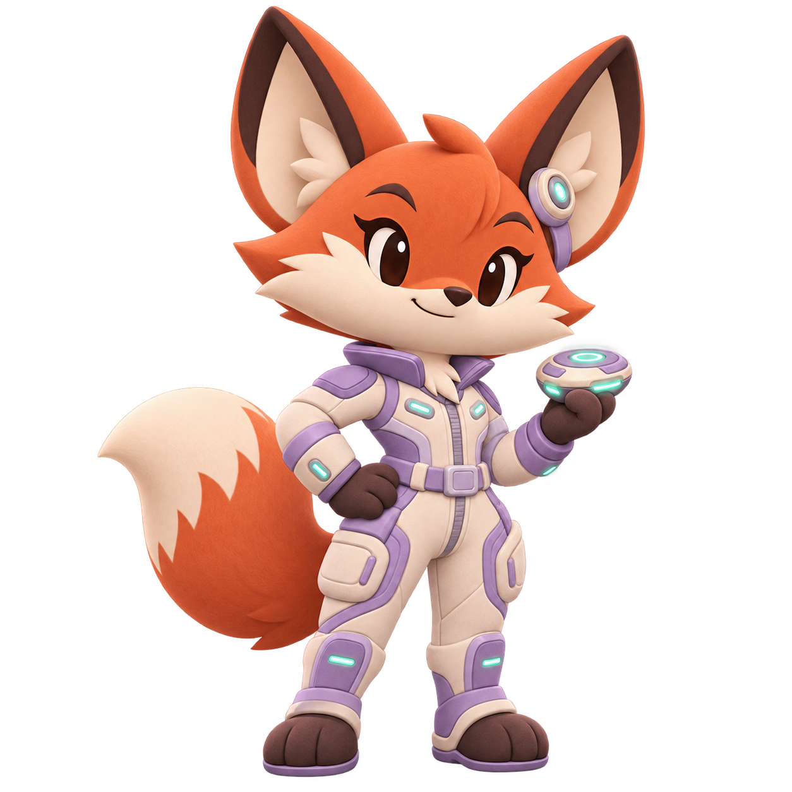
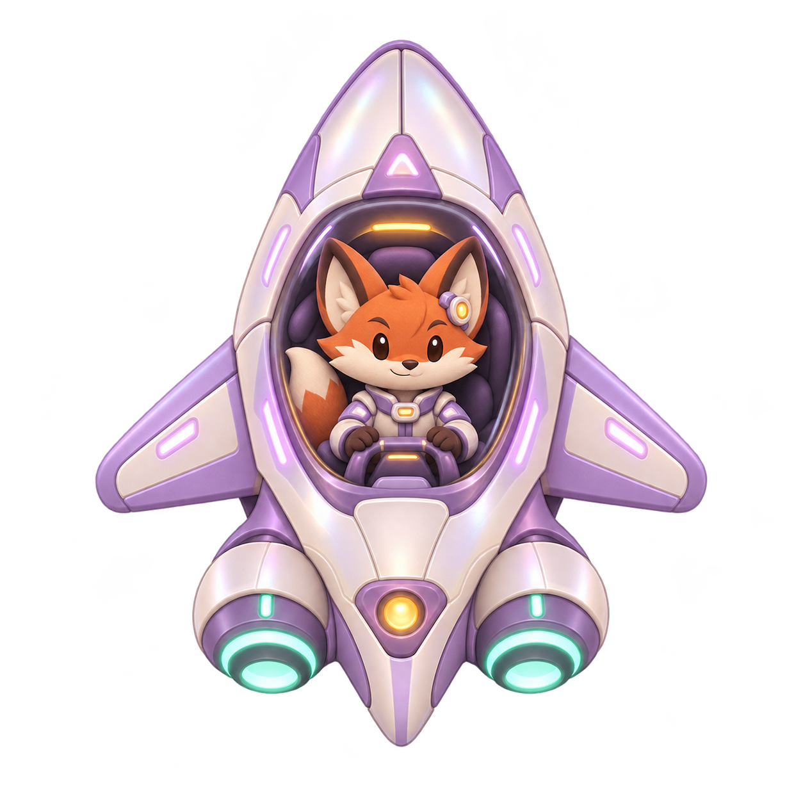
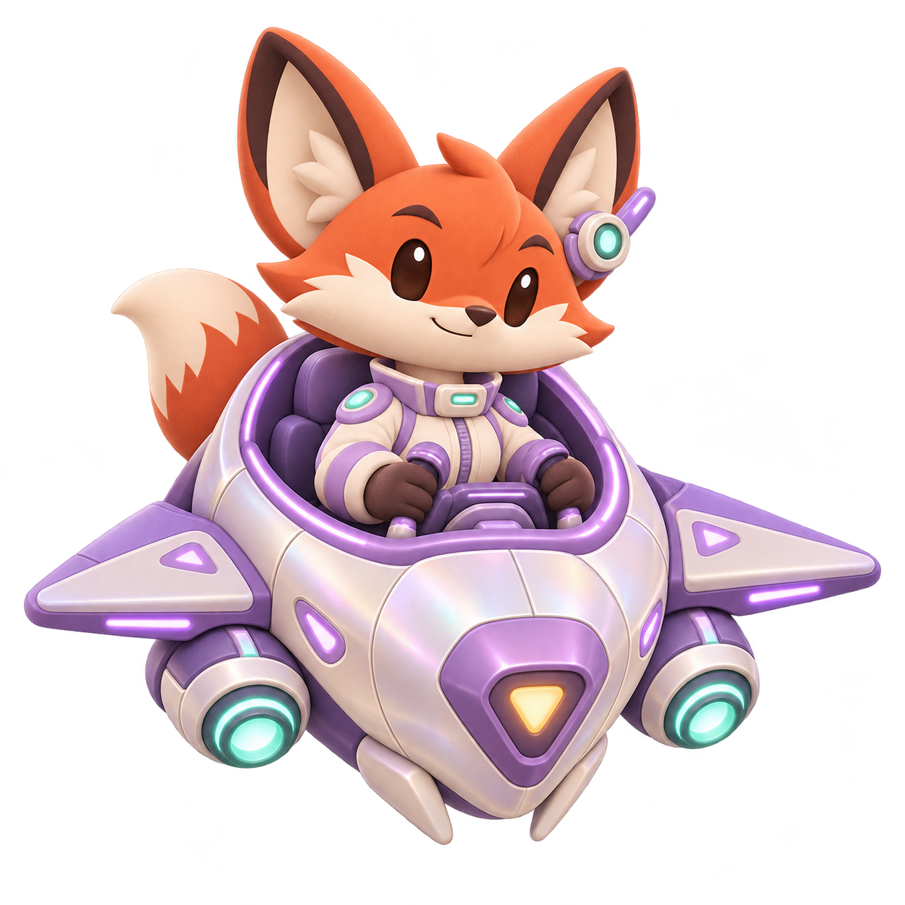

테일윙 · 캐릭터/아이템 후속 개선
2026-11-05 · 로컬 검토 · 미배포
실제 Flutter 앱 위젯/Canvas에 가상 프로필·이용권·전투를 넣은 캡처입니다. 실기기·서명 릴리즈·실제 구매 완료 화면이 아닙니다. 참조 상용 게임 이미지/로고를 사용하지 않았습니다.
변경·검사·실행·남은 작업 · 소스/원화/캡처 SHA-256 · 생성 프롬프트
세라 · 이전/새 원화
 이전 초상
이전 초상
새 초상 · 크림/라벤더 비행복 이전 전투 기체·홈 공용
이전 전투 기체·홈 공용
새 전투 기체
새 홈 전용 탑승 그림실제 앱 렌더링
237개 Flutter 검사·서버21/가상44 통과. 실제 기기 성능과 스토어/운영 설정은 미검증입니다.